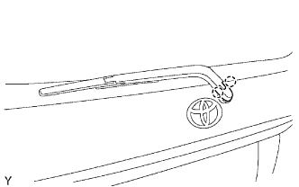
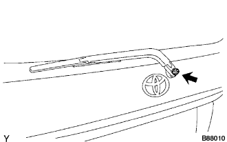
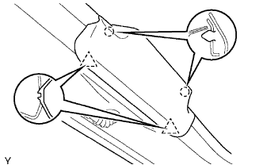
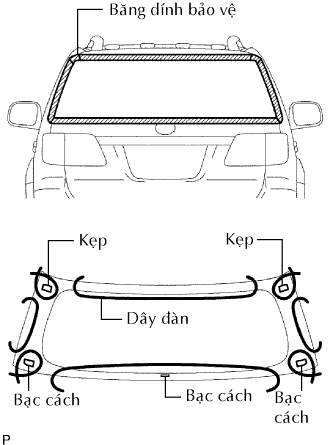
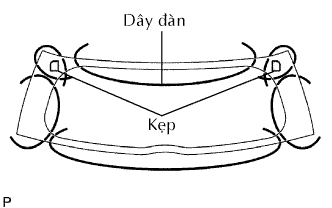
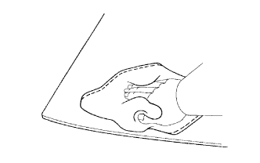
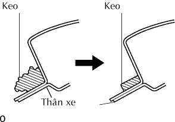

KÍNH CỬA HẬU > THÁO |
| 1. NGẮT CÁP ÂM RA KHỎI ẮC QUY |
| 2. THÁO CỤM TAI GẠT NƯỚC PHÍA SAU (w/ Gạt nước sau) |
|  |
Tách 12 khóa cài và tháo nắp.
|  |
Tháo đai ốc và tay gạt và lưỡi gạt.
| 3. THÁO CỤM ĐÈN PHANH Ở GIỮA (w/ Đèn phanh ở giữa) |
|  |
Nhả khớp 2 vấu và 2 kẹp và tháo nắp.
| 4. THÁO CỤM ĐÈN PHANH Ở GIỮA (w/ Đèn phanh ở giữa) |
 |
Tháo 2 vít.
Tháo giắc nối và tháo đèn phanh.
| 5. THÁO RAY NẸP KÍNH CỬA HẬU BÊN TRÁI |
 |
Tháo 2 vít.
Dùng đèn sấy, sấy ray nẹp.
| Hạng mục | Điều kiện tiêu chuẩn |
| Ray nẹp | 20 đến 30°C (68 đến 86°F) |
Dùng một tô vít, bóc băng dính và ray nẹp kính.
| 6. THÁO RAY NẸP KÍNH CỬA HẬU BÊN PHẢI |
| 7. THÁO CỤM TẤM ỐP TRANG TRÍ CỬA HẬU |
 |
Dùng tôvít, nhả khớp 16 kẹp và tháo tấm ốp.
| 8. THÁO KÍNH CỬA HẬU |
w/ Bộ sấy kính hậu:
Ngắt 2 giắc nối của bộ sấy kính hậu.
|  |
Dán băng dính bảo vệ ra mặt bên ngoài của thân xe để chống xước.
|  |
Từ bên trong, hãy luồn dây thép giữa thân xe và kính cửa hậu như được chỉ ra trên hình vẽ.
Hãy buộc các vật thể có thể dùng làm tay cầm (như các khối gỗ) vào cả hai đầu dây.
Cắt hết keo bằng cách kéo dây thép quanh kính hậu phía sau.
Dùng giác hút, tháo kính cửa hậu.
| 9. THÁO GIOĂNG KÍNH CỬA HẬU |
| 10. LÀM SẠCH KÍNH CỬA HẬU |
|  |
Làm sạch mép ngoài của kính cửa hậu bằng xăng trắng.
| 11. LAU SẠCH THÂN XE |
|  |
Dùng dao, tháo nẹp và bóc keo ra khỏi kính cửa hậu.
Lau và sửa lại hình dạng mặt tiếp xúc của thân xe.
Trên mặt tiếp xúc của thân xe, hãy dùng dao cắt phần keo thừa như được chỉ ra trên hình vẽ.
Lau sạch mặt tiếp xúc của thân xe bằng dung dịch.